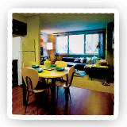
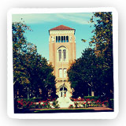

Welcome to the Haven at University of Southern California
A Community for Students in Recovery from Substance Use Issues
Together, we can do what we can’t do apart––The Haven at USC was born from this notion. As a peer-led residential community, we identify with each other’s challenges, and help each other navigate early recovery while succeeding in college. We offer recovery support services, live-in staff, and social activities for students who are committed to staying in school while learning to lead a sober lifestyle. By sticking together, we keep the college experience fun, safe, and supportive–clean and sober.
Comfortable and Convenient
The Haven at USC is located in the University Gateway––a modern mixed-use apartment complex with 24-hour security, restaurants, and entertainment. Amenities include an on-site parking garage, a cardio and weight-training gym, a 24-hour concierge service, individual and group study rooms, and a state-of-the-art computer lounge. Haven residents live and grow together in furnished apartments with same-sex roommates, supporting each other’s recovery while forming lasting friendships.
The Haven Program and Staff
Dr. Nick Techentin, our Program Director and Recovery Coach, helps our residents develop and review individualized wellness plans during weekly one-on-one meetings. These plans encourage our students to balance their recovery, academic work, and social life. We also encourage attendance and participation in 12-step meetings (or other modalities), and we host a Sunday evening 12-step speaker group that is open to everyone. Group activities include camping trips, service projects, and sober tailgates.
Haven R.A.s administer routine drug tests to keep The Haven safe and to ensure early intervention in the event of relapse. The Haven at USC also extends support to the entire family of each resident. Through monthly conferences with our Program Director, process groups and workshops for parents, and activities and programs during Trojan Family Weekend and Spring Graduation, we involve our students' loved ones in their recovery.
The Haven Center Intensive Outpatient Program
Many Haven residents participate in the Haven Center IOP. Conveniently located on-campus, we're committed to making substance abuse treatment readily accessible to every USC student who needs it. We want to help our students while enabling them to stay engaged in their academic and social lives. With flexible programming and insurance options, our programs include Intensive Outpatient Addiction Treatment, Group and Individual Therapy, Recovery Management, and Peer Mentoring with current USC students in recovery.
Applying Is Easy
- Contact us at (310) 822-1234 or shoot us an email at info@thehavenatcollege.com. We’ll tell you more about The Haven, including our fee schedule.
- Schedule an interview and assessment, so we can better get to know you and understand your motivation to live at The Haven.
- Upon acceptance, fill out an application to reserve your spot and meet with our Recovery Coach to develop your individual wellness plan.
- Move in, and/or begin IOP treatment–welcome to The Haven! (With a deposit, you can reserve your spot for a later date.)

What Students Are Saying
“As a USC student and recovering addict, it’s difficult to find a group with whom I can identify. The typical sober-living environment tends to house middle-aged people who often bring a prison mentality with them, making it difficult for me to fit in … The Haven is much different. It's great to be around other students in recovery, like me.”
--Former Haven Resident, Current USC Graduate Student
“I have to work harder than most people to live a normal life, and I don’t want to worry about the stigma of being an addict. People’s general idea of an addict is some dude with a brown paper bag in the gutter, shooting up heroin, or something. That was never my life. The Haven gives me a safety net, and helps me navigate my life at USC.”
--Current Haven Resident, USC Junior
“I really need to bounce [my] life off of other people, to know that I’m not alone. It’s hard being surrounded by a college environment that encourages alcohol consumption. I still miss that nightlife, and I know I can’t live with friends who consume alcohol and engage in other behaviors. I love living at The Haven with people who have the same challenges I do. I’m doing better in school than I ever have!”
--Former Haven Resident, USC Senior
“The Haven taught me to love myself. You taught me to take responsibility for my actions. You taught me to acknowledge that I was affecting the people I loved the most with my addiction, but that I could do something to change that. You showed me that I am my own worst enemy, but that I am also the creator of my destiny.”
--Former Haven Resident, USC Senior
What Parents Are Saying
“I want to thank you so much for supporting my son. This was a great semester for him, and I know he could not have done it without The Haven. He just found out today that he got into the Marshall School of Business, and we are all thrilled for him. I am not sure if you know that he earned all A’s and A-’s … I think his GPA this semester was a 3.7. In addition, he is very, very happy … we have our wonderful son back! We realize that there will continue to be ups and downs, but this has really been a fabulous semester. Thanks very much for your support.”
--Parent of Current Resident (USC Sophomore)
“During the past Christmas, we remembered where we were as a family a year ago … we feel very grateful for how incredibly far our son has come. I know The Haven played a major role in helping him accomplish this remarkable turnaround, and he, above all, is reaping the benefits. Thank you for your vision, hard work, and humanity in support of talented young people. USC is a better place for these kids because of The Haven."
--Parent of Former Resident (USC Junior)
“The Haven is aptly named. The people here are knowledgeable, compassionate, insightful, and generous. They understand the struggles of bright, young adults trying to move forward from substance abuse to success, anticipating their struggles and meeting their needs in ways that are uncanny. There's no road map to finding the ideal environment for someone working toward recovery. If you have found The Haven, leap at this opportunity! Tell others about it! There is no safer, better choice out there.”
--Parent of Former Resident (USC Junior)
“Thank you for helping my daughter graduate from USC. Without the support of The Haven, she would have never made it through her senior year.”
--Parent of Former Resident (USC Graduate)
I don’t think it's too dramatic to say that The Haven may have saved my son’s life. Had he continued on the trajectory he was heading, he certainly would have failed out of school. But it's just as likely he could have had another blackout that could have cost him everything.
In addition, the staff at The Haven saved our sanity. Dr. Nick and Holly were always a phone call, a text, or an email away, even on weekends and holidays. They reassured us when we needed handholding, motivated us when we wanted to give up, and encouraged us when we felt hopeless. They educated us not only about substance abuse, but also about the difficult environment on campus that our son was trying to navigate. They helped us to sympathize and empathize with how hard it is to make sober choices.
Most of all, they partnered with us for the good of our son. They asked for, and acted on, our input, yet they weren’t afraid to gently tell us when we were wrong. All of this was done while maintaining respect for us and for him.”
--Parent of Former Haven Center Student (USC Freshman)
“I can't recommend The Haven enough. This has been a great environment for my son. This is a great way to be a part of campus life and to be in a sober, student-oriented community. The students and staff are fantastic! Great location and environment––so positive! This is an ideal way for students who have a problem with addiction to stay sober and to stay in school.”
--Parent of Former Haven Resident (USC Junior and Senior Years)
What USC Faculty And Administrators Are Saying
“I am reaching out to you as I have recently been interacting with many students who are hooked into The Haven and absolutely love their experiences. They have found the Haven to not only provide them with support and counseling while they work through their addiction issues, but also as an accepting community. The friendships they make as a result of The Haven are very valuable and meaningful to them. I met with a Haven resident yesterday who told me that every school should have a Haven! So thank you! You are doing fabulous work, and we really value having you as our partners, and as an important resource for our students.”
--Lauren Elan, Assistant Director, USC Student Support and Advocacy
“I continue to be impressed by The Haven and its staff. Their staff is responsive, concerned, smart, and involved. Students have reported that they feel helped in a way that truly has made a huge difference in their lives. And the word is spreading to parents, students, administrators, and community members on other campuses. I strongly suspect that more students will want to live at The Haven as time goes on and its favorable reputation continues to grow.”
--Dr. Ilene Rosenstein, Director, USC Engemann Counseling Center
“The students at The Haven are flourishing. Specifically, the tone of the program is open, positive, and caring. The students that make their home at The Haven quite obviously love the program. The Haven works to establish a friendly and positive presence on campus, and the result is that its residents can identify with the program, while still fully identifying with the larger USC community.
I also collaborated with members of The Haven on a research proposal that was subsequently funded by the Templeton Foundation. This project allows us to investigate how the formation of particular habits contributes to long-term sustained recovery. They have been equally passionate and insightful as collaborators.
I am convinced The Haven is a fantastic asset to our community here at USC. I believe that sense is widely shared. It would be terrific to see the program brought to more campuses. Many students struggling with addiction, and their families, would be the better for it. Recommending The Haven is a genuine privilege because I feel so strongly about the work they do.”
--John Monterosso, USC Associate Professor of Neuroscience
“This landmark program is offering ‘safe haven’ to students who would otherwise be suffering alone, [and] dropping out of school (in some cases, never to return). It has been my experience that our students (as well as most human beings) are attracted to health, and, as a result, this movement is having a positive effect on others in our campus community. I highly promote any effort that supports the furthering of this great program ... it is of tremendous benefit to both our institution and to its students.”
--Pastor Dan Gibson, USC Dept. of Religious Studies